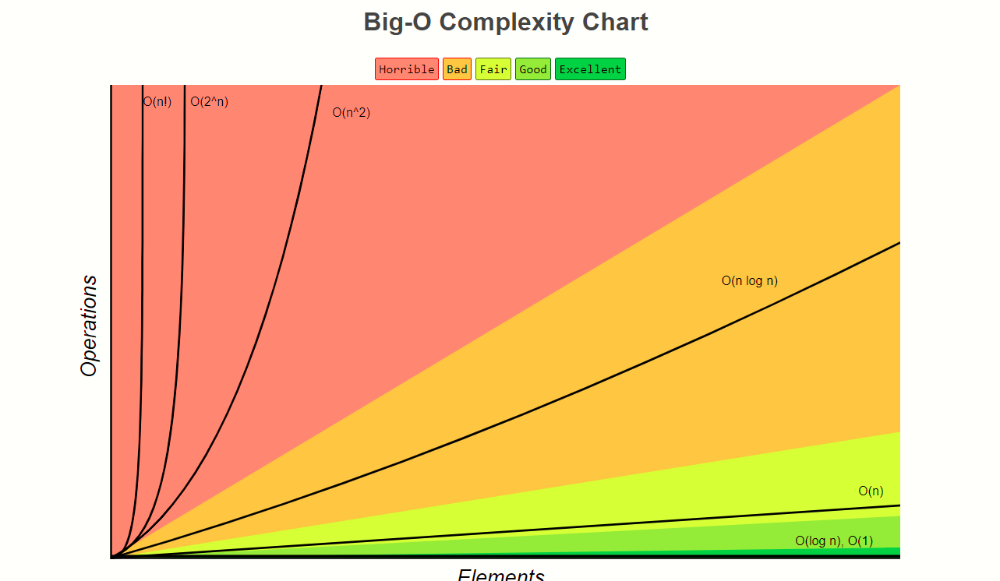

{% embed url=“https://replit.com/@bgoonz/d1#main.py” %}
Windows machines usually do not ship with Python installed. Installing on Windows is pretty simple.
Most likely, your Linux distribution already has Python installed. However, it is likely to be Python 2 and not Python 3.
You can determine what version you have by opening a terminal and typing
python --version. If the version shown is
Python 2.x.x, then you want to install the latest version of
Python 3.
The procedure for installing the latest version of Python depends on which distribution of Linux you are running.
Use this article (Links to an external site.) to find instructions specific to your Linux distribution.
Current versions of macOS include a version of Python 2, but you want to be using Python 3.
The best way to install Python 3 on macOS is to use the Homebrew package manager.
Install Homebrew
After Homebrew has finished its installation process, you then need to install Python.
Install Python
brew install python3. This command will download and
install the latest version of Python.
pip3.
Here are a few websites that give you online access to the Python interpreter:
Before you do anything else, search for a solution to your problem on your own. One thing you should start doing is keeping track of all your research when solving a problem. One easy way to do this is to have a browser window represent a specific search for a solution, and each open tab represents an attempt at solving it. Keeping track of your research is vital because it’s helpful to provide examples of similar questions or similar problems and explain why those didn’t answer your specific problem or question. It also helps the person answering your question avoid pointing you toward resources you’ve already explored, and lets them know that you’ve already put in the work.
The first thing you do when you ask a question is to introduce the problem. The first paragraph of your written question should serve as an executive summary of the problem. All the following paragraphs should fill in the details of the problem.
An important thing to include in your problem introduction is a precise explanation of how you encountered the problem. Write about the difficulties that kept you from solving it. Describe what you already tried and include the results of the research you’ve done.
You should also provide as much detail about the context as possible. For instance, include the language version, the platform version, the operating system, the database type, specific IDE, and any web server information. You should also include your particular constraints. For example, you may not be allowed to use feature A or B that would provide an obvious solution. If you have an odd constraint, it may also help explain why you have that constraint.
One thing to remember is that not all questions benefit from including code. However, if you include code, definitely do not just copy in your entire program! By having irrelevant details, you make your question much harder to answer and decrease the chances of someone helping you.
Here are some guidelines for when to include code in your question.
Include just enough code to allow others to reproduce your specific problem. One way to do this is to restart from scratch. Do not include snippets of your entire program. Instead, create a new program, but only add what’s necessary to recreate the problem.
If you aren’t exactly sure where the problem code is, one way to find it is by removing code chunks one at a time until the problem disappears — then add back the last part. This way, you can deduce that the last piece of code you added back is likely the source of your problem.
Be careful not to remove too much code, either. Keep your question brief, but maintain enough context for clarity.
Make sure you include all the portions of the code needed to reproduce the problem. It would be best if you assumed that the person who is answering your question would not write any code to reproduce your issue. Again, remember, do not use images of code—those trying to help you need direct access to the code you include in your question.
When you include your code, it’s also important to tell the reader exactly what you expect the behavior to be. Be sure to show the reader the exact wording of the error message you encountered (if there was one). It’s also crucial to double-check that your included example reproduces the problem.
One other thing you can do is create a live example on a site like sqlfiddle.com or jsbin.com. If you do, make sure you also include a copy of your code in your question. Not everyone will utilize the link to the live example.
And to reiterate, do not post images of any code, data, or error messages—reserve images for things like rendering bugs—things that are impossible to describe accurately with just text.
Don’t send a question you haven’t proofread. When you post your question, you should have already read and reread it, taking care to follow all the best practices and making sure your question makes sense. It would be best if you imagined that you’re coming to your question fresh, with no other context but the question itself. You want to make your question as easy for someone to answer as possible. Remember, the reader is likely choosing between several questions they could answer. You want your question to stand out as something concise and approachable. Don’t forget to double-check your spelling, grammar, and formatting. Keep it as straightforward as you can; you’re not writing a novel.
As feedback and responses to your question begin coming in, respond as quickly as possible. You’ll likely receive clarifying questions, and your readers need that clarification to help you.
Now let’s look at an example of a question posted to Stack Overflow and analyze it to see if it follows the best practices outlined above.
The question (Links to an external site.):
The first thing to notice is that the post has a short but descriptive title that adequately summarizes the question.
Accessing the index in ‘for’ loops?
Next, did the questioner provide any additional context or proof of the research they’ve done so far? It doesn’t look like it. They could improve the question by including what they tried and the resources they explored.
The questioner did an excellent job of introducing the question and including code that shows what they are trying to do. In this case, they did not need to include experience vs. expected behavior; they just needed to have the expected behavior. By clearly stating what the desired result was, it helped the person answering to respond appropriately.
The code they included is a minimal and complete example, allowing someone to reproduce the problem quickly. The questioner left out irrelevant details and code that would’ve distracted from the primary question. They also included an example of what the desired output would be, which is helpful.
It appears the questioner proofread their question beforehand as it does not contain any glaring spelling, grammar, or formatting problems. However, we could critique this example for including a redundant sentence at the end. Instead of including that sentence, they might have rephrased the first sentence of the question to be more precise.

Learning to use the print function in Python is the perfect
way to start writing Python code. When learning to write in any new
programming language, one of the first things you want to do is get some
output from your program. The print function is how
you output the value of an object to the screen. You will learn how to use
the print function in Python.
print with different objects
Let’s start by executing the print function to print different types of
objects in Python. There are numerous types of objects that you can print
using the print function.
Using print with no arguments:
Notice the empty line after calling the print function. The
default end value when calling print is the newline character
\n.
Using print with a string literal:
Notice how calling print with the string literal printed the
exact string we passed in onto the screen.
Using print with a variable:
Notice how calling print with the
slogan variable prints the value assigned to the
slogan variable.
Using print with an expression:
>>> superlative = "wonderful"
>>> school = "Lambda School"
>>> print(school + " is " + superlative)
Lambda School is wonderful
>>>
Notice how the argument for the print function can be an
expression. Once the expression is resolved to a string object, the
print function can output it to the screen.
Using print with other object types:
print(2020)
2020
>>> print(123.456)
123.456
>>> print(False)
False
>>> print(["Lambda", "School", 2, 0, 2, 0])
['Lambda', 'School', 2, 0, 2, 0]
>>> print(("Lambda", "School"))
('Lambda', 'School')
>>> print({"school": "Lambda School", "year": 2020})
{'school': 'Lambda School', 'year': 2020}
>>>
Any object passed as an argument into print will get
converted into a string type before outputted to the screen.
You can see how the print function is easy to use and how it
can handle any object type that you pass into it.
print
Now, let’s look at how we can pass multiple arguments into the
print function. Using print with multiple
arguments gives you a flexible and easy way to output items to the screen.
We can pass multiple objects, all of the same or different types, into
print.
Notice how each object we passed in was converted to a string and then
output to the screen. Notice also that print used
" " as the default separator value.
We can change the separator value by assigning a value to the keyword
argument sep.
>>> print("Lambda School", 2020, True, sep="!!!")
Lambda School!!!2020!!!True
>>> print("Lambda School", 2020, True, sep="\t")
Lambda School 2020 True
>>> print("Lambda School", 2020, True, sep="\n")
Lambda School
2020
True
>>> print("Lambda School", 2020, True, sep="")
Lambda School2020True
>>>end value with print
You can also specify the end value by assigning a value to
the end keyword argument when you call the
print function. Being able to print a value to the screen but
allow the user to stay on the same line is useful and necessary in some
cases.
Here is how you can change the default end value (which is
\n) when calling the print function.
>>> print("Are you a Lambda School student?", end=" (Y or N)")
Are you a Lambda School student? (Y or N)>>>
Customizing the end value when calling the
print function can be useful and necessary in some
circumstances.
You have now learned the basics of using the print function
in Python. You learned how to call the print function to
print objects of different types. You now know how to use
print with multiple positional arguments. In certain
necessary situations, you also know how to change the default
end value when calling the print function.
Now, get some practice using the print function by completing
the challenge below.
{% embed url=“https://replit.com/@bgoonz/cs-unit-1-sprint-1-module-1-print-3#main.py” %}

Python is unique because indentation instead of some other character marks
blocks of code. A block of code is a collection of statements that are
grouped. The syntax for denoting blocks varies from language to language.
For example, in C, blocks are delimited by curly braces ({
and }). Understanding how Python uses whitespace and
indentation to denote logical lines and code blocks is essential.
Whitespace is any character represented by something that appears empty
(usually \t or " "). The characters that Python
considers to be whitespace can be seen by printing out the value of
string.whitespace from the string library.
>>> import string
>>> string.whitespace
' \t\n\r\x0b\x0c'
>>>
Notice the characters are " " (space), \t (tab),
\n (newline), \r (return),
\x0b (unicode line tabulation), and
\x0c (unicode form feed).
You’ve seen the different types of whitespace characters that can appear,
but you mainly need to concern yourself with " ",
\t, and \n.
Whitespace is used to denote the end of a logical line of code. In Python,
a logical line of code’s end (a statement or a definition) is marked by a
\n.
>>> first = "Lambda"
>>> second = "School"
>>> first + second
'LambdaSchool'
>>> first \
... + \
... second
'LambdaSchool'
>>>
Notice how the REPL evaluates the expression
first + second when I return on line 3. Below that, I can
write one logical line of code over multiple lines by ending each line
with a \ character. That \ character lets the
Python interpreter that even though there is a newline, you don’t want it
to treat it as the end of a logical line.
It’s important to understand that Python assumes meaning in newline characters when trying to interpret your code.
Whitespace (indentation) can denote code blocks. Python gives meaning to the amount of whitespace (indentation level) that comes before a logical line of code.
>>> if True:
... if True:
File "<stdin>", line 2
if True:
^
IndentationError: expected an indented block
>>>
This code raises an Indentation Error because the Python
interpreter expects to find additional whitespace inside the
if block.
>>> if True:
... if True:
... print("it worked!")
...
it worked!
>>>The Python interpreter can successfully run this code because consistent whitespace (level of indentation) is used.
>>> if True:
... if True:
... print("it worked!")
File "<stdin>", line 3
print("it worked!")
^
TabError: inconsistent use of tabs and spaces in indentation
Although you can’t tell in the code snippet above, for the second
if statement, I used a \t to indent. But, for
the indentation on print("it worked!", I used eight
" " (spaces). The mismatch of tab usage and spaces raises an
error when Python tries to interpret the code.
Consistent whitespace usage (indentation) is crucial to making sure that Python can interpret your code correctly.
In Python, whitespace has meaning; it denotes the end of logical lines and
also code blocks. Whitespace is any character represented by something
that appears empty, although the most common characters are
" ", \t, and \n. The Python
interpreter knows where the end of a logical line of code is because of
the \n. The amount of whitespace (level of indentation) is
used in Python to denote blocks of code. Understanding how the Python
interpreter looks at whitespace is vital to writing valid Python code.
{% embed url=“https://replit.com/@bgoonz/cs-unit-1-sprint-1-module-1-white-space-3#main.py” %}

Python is not a “statically typed” language, and every variable in Python is an object. You don’t have to declare a variable’s type.
In Python, you can have integers and floating-point numbers.
You can define an integer like so:
my_int = 3You can also cast a floating-point number to be an integer like so:
my_int = int(3.0)To define a floating-point number, you can declare it literally or typecast it with the float constructor function:
my_float = 3.0
my_float = float(3)You can define strings with either single or double quotes:
my_string = 'Lambda School'
my_string = "Lambda School"It’s common to use double quotes for strings so that you can include apostrophes without accidentally terminating the string.
my_string = "I don't have to worry about apostrophes with my double-quotes."Let’s practice declaring variables to store an int, a float, and a string:
my_int = 2
my_float = 5.0
my_str = "Lambda School"{% embed url=“https://replit.com/@bgoonz/cs-unit-1-sprint-1-module-1-basic-types-3” %}

There are a few basic operators that you should be familiar with as you start writing Python code.
You can use the addition (+), subtraction (-),
multiplication (*), and division (/) operators
with numbers in Python.
my_number = 2 + 2 * 8 / 5.0
print(my_number) # 5.2
There is also an operator called the modulo operator (%).
This operator returns the remainder of integer division.
my_remainder = 9 % 4
print(my_remainder) # 1
You can use two multiplication operators to make the exponentiation
operator (**).
two_squared = 2 ** 2
print(two_squared) # 4
two_cubed = 2 ** 3
print(two_cubed) # 8You can use the addition operator to concatenate strings and lists:
string_one = "Hello,"
string_two = " World!"
combined = string_one + string_two
print(combined) # Hello, World!
lst_one = [1,2,3]
lst_two = [4,5,6]
big_lst = lst_one + lst_two
print(big_lst) # [1, 2, 3, 4, 5, 6]You can also use the multiplication operator to create a new list or string that repeats the original sequence:
my_string = "Bueller"
repeated = my_string * 3
print(repeated) # BuellerBuellerBueller
my_list = [1, 2, 3]
repeated_list = my_list * 3
print(repeated_list) # [1, 2, 3, 1, 2, 3, 1, 2, 3]Now, let’s see if we can combine all of this information in a quick demo.
First, let’s create two variables, a and b,
where each variable stores an instance of the object class.
a = object()
b = object()
Next, let’s see if we can make two lists, one containing five instances of
a, and the second with five instances of b.
a_list = [a] * 5
b_list = [b] * 5
Then, let’s combine a_list and b_list into a
combined list.
combined = a_list + b_list
If our code works as expected, combined should have a length
of 10.
print(len(combined)) # 10{% embed url=“https://replit.com/@bgoonz/cs-unit-1-sprint-1-module-1-basic-operators-1#main.py” %}
To format a string in Python, you use the % operator to
format a set of stored variables in a tuple. You also include
argument specifiers in your string with special symbols like
%s and %d.
For example, let’s say you want to insert a name variable
inside a string. You would do the following:
name = "Austen"
formatted_string = "Hello, %s!" % name
print(formatted_string) # Hello, Austen!If you have more than one argument specifier, you need to enclose your arguments in a tuple:
name = "Austen"
year = 2020
print("Hey %s! It's the year %d." % (name, year))
# Hey Austen! It's the year 2020.
Any object that is not a string can also be formatted using the
%s operator. The string which returns from the object’s
repr method will be used in the formatted string.
my_list = [1,2,3]
print("my_list: %s" % my_list)
# my_list: [1, 2, 3]A few of the common argument specifiers are:
%s - String (or any object with a string representation)
%d - Integers%f - Floating point numbers%.<number of digits>f - Floating point numbers with a
fixed amount of digits to the dot’s right.
%x/%X - Integers in hexadecimal (lowercase/uppercase)
Let’s see if we can use all of this information to practice formatting a few strings.
Let’s imagine that we have some data that we want to inject into a string.
product_name = "bananas"
price = 1.23
product_id = 123456We need to print a formatted string using argument specifiers and a tuple that contains our data:
print("%s (id: %d) are currently $%.2f." % (product_name, product_id, price))
# bananas (id: 123456) are currently $1.23.{% embed url=“https://replit.com/@bgoonz/cs-unit-1-sprint-1-module-1-formatted-strings-2” %}
8
You can think of a string as anything between quotes. Strings store a sequence of characters or bits of text.
There are lots of ways you can interact with strings in Python.
The len() method prints out the number of characters in the
string.
my_string = "Hello, world!"
print(len(my_string)) # 12
The index() method prints out the index of the substring
argument’s first occurrence.
my_string = "Hello, world!"
print(my_string.index("o")) # 4
print(my_string.index(", w")) # 5
The count() method returns the number of occurrences of the
substring argument.
my_string = "Hello, world!"
print(my_string.count("o")) # 2
print(my_string.count("ll")) # 1
To slice a string, you can use this syntax:
[start:stop:step]. To reverse the string’s order, you can set
the step value to be -1.
my_string = "Hello, world!"
print(my_string[3:7]) # lo,
print(my_string[3:7:2]) # l,
print(my_string[::-1]) # !dlrow ,olleH
You can convert a string to uppercase or lowercase with the
upper() and lower() methods.
my_string = "Hello, world!"
print(my_string.upper()) # HELLO, WORLD!
print(my_string.lower()) # hello, world!
You can determine if a string starts with or ends with a specific sequence
with the startswith() and endswith() methods.
my_string = "Hello, world!"
print(my_string.startswith("Hello")) # True
print(my_string.endswith("globe!")) # False
The split() method allows you to split up a string into a
list. The default separator is any whitespace. You can also specify the
separator value with an argument if you want.
my_string = "Hello, world!"
print(my_string.split()) # ['Hello,', 'world!']
print(my_string.split(",")) # ['Hello', ' world!']
print(my_string.split("l")) # ['He', '', 'o, wor', 'd!']{% embed url=“https://replit.com/@bgoonz/cs-unit-1-sprint-1-module-1-basic-string-operations-2” %}
You can think of a string as anything between quotes. Strings store a sequence of characters or bits of text.
There are lots of ways you can interact with strings in Python.
The len() method prints out the number of characters in the
string.
my_string = "Hello, world!"
print(len(my_string)) # 12
The index() method prints out the index of the substring
argument’s first occurrence.
my_string = "Hello, world!"
print(my_string.index("o")) # 4
print(my_string.index(", w")) # 5
The count() method returns the number of occurrences of the
substring argument.
my_string = "Hello, world!"
print(my_string.count("o")) # 2
print(my_string.count("ll")) # 1
To slice a string, you can use this syntax:
[start:stop:step]. To reverse the string’s order, you can set
the step value to be -1.
my_string = "Hello, world!"
print(my_string[3:7]) # lo,
print(my_string[3:7:2]) # l,
print(my_string[::-1]) # !dlrow ,olleH
You can convert a string to uppercase or lowercase with the
upper() and lower() methods.
my_string = "Hello, world!"
print(my_string.upper()) # HELLO, WORLD!
print(my_string.lower()) # hello, world!
You can determine if a string starts with or ends with a specific sequence
with the startswith() and endswith() methods.
my_string = "Hello, world!"
print(my_string.startswith("Hello")) # True
print(my_string.endswith("globe!")) # False
The split() method allows you to split up a string into a
list. The default separator is any whitespace. You can also specify the
separator value with an argument if you want.
my_string = "Hello, world!"
print(my_string.split()) # ['Hello,', 'world!']
print(my_string.split(",")) # ['Hello', ' world!']
print(my_string.split("l")) # ['He', '', 'o, wor', 'd!']
{% embed url=“https://replit.com/@bgoonz/cs-unit-1-sprint-1-module-1-basic-string-operations-3” %}
Python uses boolean values to evaluate conditions. An expression in any
Boolean context will evaluate to a Boolean value and then control your
program’s flow. Python’s boolean values are written as
True and False (make sure you capitalize the
first character).
To compare the value of two expressions for equality, you use the
== operator. You can also use < (less than),
> (greater than), <= (less than or equal),
>= (greater than or equal), and != (not
equal).
x = 10
print(x == 10) # True
print(x == 5) # False
print(x < 15) # True
print(x > 15) # False
print(x <= 10) # True
print(x >= 10) # True
print(x != 20) # True
You build up more complex boolean expressions by using the
and and or operators.
name = "Elon"
age = 49
if name == "Elon" and age == 49:
print("You are a 49 year old person named Elon.")
if name == "Elon" or name == "Bill":
print("Your name is either Elon or Bill.")
Any time you have an iterable object (like a list), you can check if a
specific item exists inside that iterable by using the
in operator.
years = [2018, 2019, 2020, 2021]
year = 2020
if year in years:
print("%s is in the years collection" % year)
# 2020 is in the years collection
We can use the if, elif, and the
else keywords to define a series of code blocks that will
execute conditionally.
first_statement = False
second_statement = True
if first_statement:
print("The first statement is true")
elif second_statement:
print("The second statement is true")
else:
print("Neither the first statement nor the second statement are true")
Any object that is considered “empty” evaluates to False. For
example, "", [], and 0 all evaluate
to False.
If we want to determine if two objects are actually the same instance in
memory, we use the is operator instead of the value
comparison operator ==.
a = [1,2,3]
b = [1,2,3]
print(a == b) # True because a and b have the same value
print(a is b) # False because a and b reference two different list objects
x = [1,2,3]
y = x
print(x == y) # True because x and y have the same value
print(x is y) # True because x and y reference the same list object
There is also the not operator, which inverts the boolean
that follows it:
print(not False) # True
print(not (1 == 1)) # False because 1 == 1 is True and then is inverted by not{% embed url=“https://replit.com/@bgoonz/cs-unit-1-sprint-1-module-1-conditional-expressions-2#main.py” %}
You can use two types of loops in Python, a for loop and a
while loop. A for loop iterates over a given
sequence (iterator expression). A while loop repeats as long
as a boolean context evaluates to True.
The break statement terminates the loop containing it.
Control of the program flows to the statement immediately after the body
of the loop. If the break statement is inside a nested loop
(loop inside another loop), the break statement will only
terminate the innermost loop.
You can use the continue statement to skip the rest of the
code inside a loop for the current iteration only. The loop does
not terminate entirely but continues with the next iteration.
Here is an example of a few different ways you can use a
range as the iterable for a for loop.
# Prints 0, 1, 2, 3, 4
for x in range(5):
print(x):
# Prints 2, 3, 4, 5, 6
for x in range(2, 7):
print(x)
# Prints 1, 3, 5, 7
for x in range(1, 8, 2):
print(x)
This example shows the simple usage of a while loop to print
the same values as the for loops above.
# Prints 0, 1, 2, 3, 4
count = 0
while count < 5:
print(count)
count += 1
# Prints 2, 3, 4, 5, 6
count = 2
while count < 7:
print(count)
count += 1
# Prints 1, 3, 5, 7
count = 1
while count < 8:
print(count)
count += 2
You can use a break statement to exit a for loop
or a while loop.
You can also use a continue statement to skip the current
block but not exit the loop entirely.
# Prints 1, 3, 5, 7
for x in range(8):
# if x is even, skip this block and do not print
if x % 2 == 0:
continue
print(x){% embed url=“https://replit.com/@bgoonz/cs-unit-1-sprint-1-module-1-loops-2#main.py” %}
To make our code more readable and DRY (Don’t Repeat Yourself), we often want to encapsulate code inside a callable function.
To define a function in Python, we follow this syntax:
Let’s define a greeting function that allows us to specify a name and a specific greeting.
Now, we can call our greet function and pass in the data that
we want.
greet("Austen", "I hope you are having an excellent day!")
# Hello, Austen, I hope you are having an excellent day!
If we want to define a function that returns a value to the caller, we use
the return keyword.
{% embed url=“https://replit.com/@bgoonz/cs-unit-1-sprint-1-module-1-loops-3#main.py” %}
{% embed url=“https://gist.github.com/bgoonz/4f5c0b5fe80a84421ff9a5a66dce29da” %}
Python uses boolean values to evaluate conditions. An expression in any
Boolean context will evaluate to a Boolean value and then control your
program’s flow. Python’s boolean values are written as
True and False (make sure you capitalize the
first character).
To compare the value of two expressions for equality, you use the
== operator. You can also use < (less than),
> (greater than), <= (less than or equal),
>= (greater than or equal), and != (not
equal).
x = 10
print(x == 10) # True
print(x == 5) # False
print(x < 15) # True
print(x > 15) # False
print(x <= 10) # True
print(x >= 10) # True
print(x != 20) # True
You build up more complex boolean expressions by using the
and and or operators.
name = "Elon"
age = 49
if name == "Elon" and age == 49:
print("You are a 49 year old person named Elon.")
if name == "Elon" or name == "Bill":
print("Your name is either Elon or Bill.")
Any time you have an iterable object (like a list), you can check if a
specific item exists inside that iterable by using the
in operator.
years = [2018, 2019, 2020, 2021]
year = 2020
if year in years:
print("%s is in the years collection" % year)
# 2020 is in the years collection
We can use the if, elif, and the
else keywords to define a series of code blocks that will
execute conditionally.
first_statement = False
second_statement = True
if first_statement:
print("The first statement is true")
elif second_statement:
print("The second statement is true")
else:
print("Neither the first statement nor the second statement are true")
Any object that is considered “empty” evaluates to False. For
example, "", [], and 0 all evaluate
to False.
If we want to determine if two objects are actually the same instance in
memory, we use the is operator instead of the value
comparison operator ==.
a = [1,2,3]
b = [1,2,3]
print(a == b) # True because a and b have the same value
print(a is b) # False because a and b reference two different list objects
x = [1,2,3]
y = x
print(x == y) # True because x and y have the same value
print(x is y) # True because x and y reference the same list object
There is also the not operator, which inverts the boolean
that follows it: